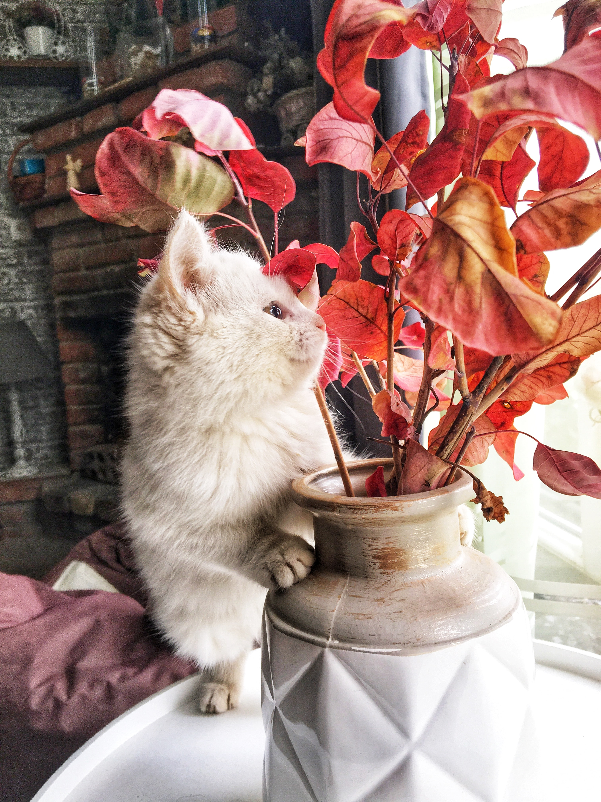
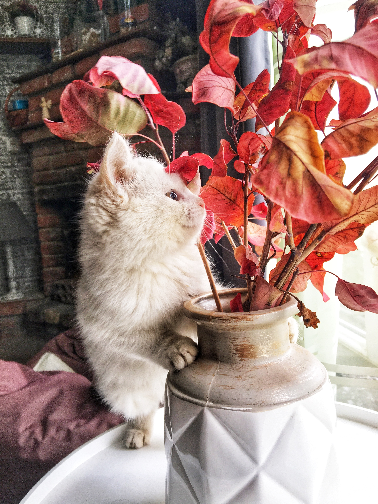

LIFE
_시
- 문정희 시인
- 류시화 시인
 

문정희 시
1947년 5월 25일 전남 보성 태생. 진명여고를 거쳐 동국대 국문과 및 동 대학원을 졸업하였다.
진명여고 재학중 첫 시집 『꽃숨』(1965)을 발간했다. 1969년 『월간문학』 신인상에 「불면」과 「하늘」이 당선되어 문단에 등단하였다. 이후 『문정희 시집』(1973), 『혼자 무너지는 종소리』(1984), 『아우내의 새』(1986), 『그리운 나의 집』(1987), 『제 몸속에 살고 있는 새를 꺼내어 주세요』(1990), 『남자를 위하여』(1996), 『오라, 거짓 사랑아』(2001), 『모든 사랑은 첫사랑이다』(2003), 『양귀비꽃 머리에 꽂고』(2004), 『나는 문이다』(2007), 『찔레』(2008) 등 많은 시집을 냈다. 그리고 1975년 시극집 『새떼』로 현대문학상을 수상하기도 했다.
그의 시는 낭만주의적 정신을 기본 색채로 하고 있으며, 청순한 감각과 명징한 언어로 형상화되었다.
그의 시적 태도는 “아니어요. 작은 햇살에도 얼굴 부끄러운/ 풀꽃 같은/ 사랑 하나로// 높은 벽에 온몸 부딪고/ 스러지고 싶어요”(황진이의 노래 1)에서 보여주듯 세계 자체를 직유 또는 은유적으로 받아들이고 이를 자신의 감정과 연결시켜 표현하였다. 그리하여 “~이다”, “~되다”, “~싶다”의 유비적 세계에 대한 서정적 인식을 바탕으로 사랑, 부끄러움, 고뇌, 자유, 슬픔의 센티멘털한 감정을 정감있게 그려내는가 하면, 「감자」, 「사랑하는 사마천 당신에게」, 「남한강을 바라보며」 등에서처럼 설화적 모티프를 현실과 결부시켜 그려내기도 하였다.

수상내역
1969년 작품명 '불면' - 월간문학 신인상에 「불면」과 「하늘」이 당선
작품명 '하늘' - 월간문학 신인상에 「불면」과 「하늘」이 당선
1975년 작품명 '새떼' - 현대문학상
작품목록
꽃숨
문정희시집
새떼
하늘보다 먼 곳에 매인 그대
문정희 시인
류시화 시인
혼자 무너지는 종소리
아우내의 새
그리운 나의 섬
우리는 왜 흐르는가
찔레
너의 들판에 바람꽃으로
제 몸 속의 새를 꺼내주세요
오늘 같은 날, 나는 머리를 자르고 싶어요
우리가 서로를 알지 못했던 시간
남자를 위하여
이 세상 모든 사랑은 무죄이다
[네이버 지식백과] 문정희 [文貞姬] (한국현대문학대사전, 2004. 2. 25., 권영민)